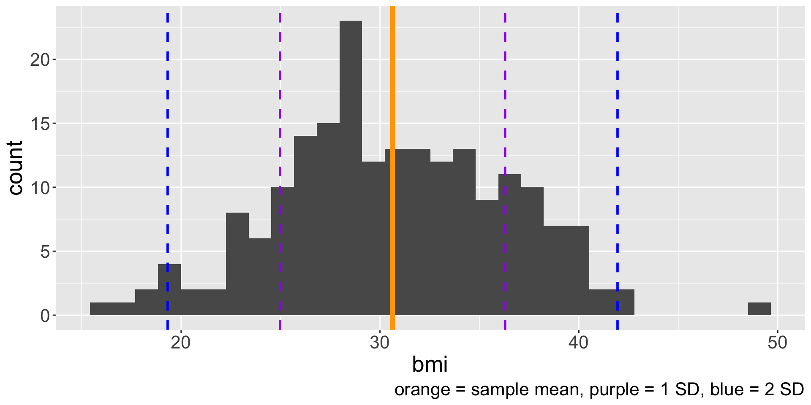
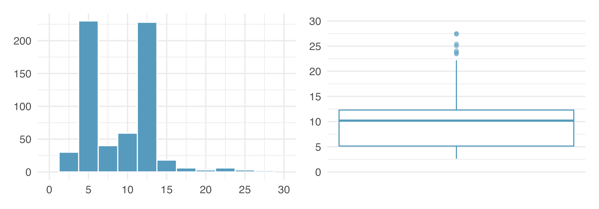
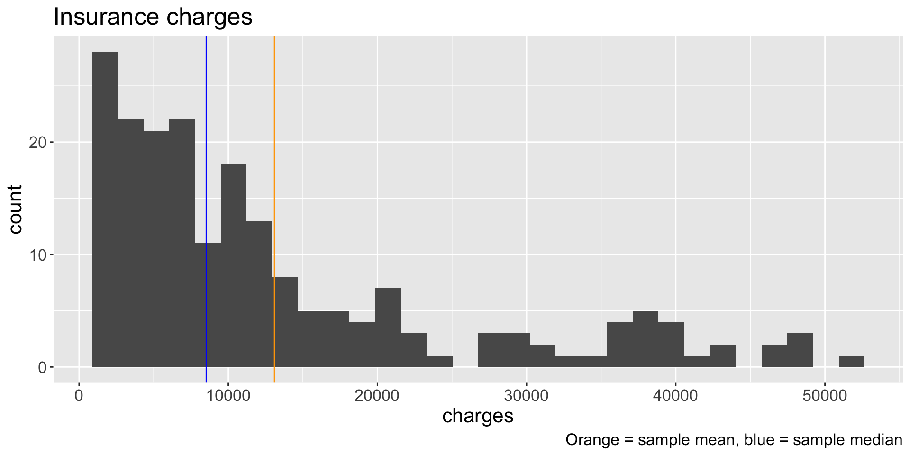
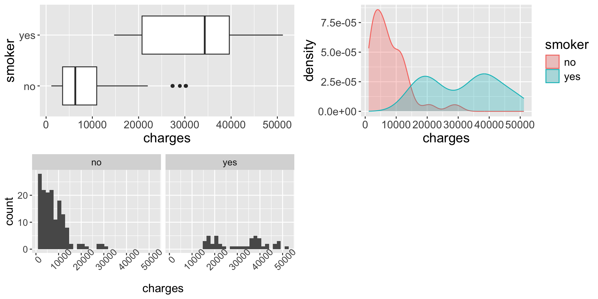

Numerical data
Visualization and summary statistics (part 2)
Recap
We learned about the sample mean \(\bar{x}\), the sample variance \(s^2 = \frac{1}{n-1} \sum_{i=1}^{n} (x_{i} - \bar{x})^2\), and the sample standard deviation \(s = \sqrt{s^2}\)
Why care about standard deviation (SD)? Describes how far data are distributed from their mean
Usually (but not always!!) about 70% of the data will be within one SD of the mean, and 95% will be within two SDs
These percentages are not precise, but are useful for intuition
We will come back to this later in semester
More visualizations and statistics

We know how to calculate some summary statistics and interpret them alongside the histogram. But wouldn’t it be great if we had a visualization that directly displays some summary statistics?
Boxplot
Another commonly used visualization to display the distribution of a numerical variable is the boxplot. Boxplots are created using five statistics and identify unusual observations.
- Does the orientation (vertical or horizontal) matter?
Median
The (sample) median \(m\) is another common measure of center of a distribution. It is the value of the data distribution where 50% of the data are less than \(m\) and 50% of the data are greater than \(m\).
- If we order the data from smallest to largest, the median is the value in the middle.
- If the number of observations \(n\) is even, then there will be two values in the middle, and the median is taken as their average.
Consider the following data: \(\boldsymbol{x} =116, 114, 112, 120, 108, 113, 123, 118, 119, 115\). What is the median?
The median is also known the 50th percentile: 50% of the data fall below \(m\)
Quartiles
The 25th percentile is the value of data with 25% of values below it. Special name: first quartile \(Q_{1}\)
The 75th percentile is the value of data with 75% of values below it. Special name: third quartile \(Q_{3}\)
What percent of the data fall between \(Q_{1}\) and \(Q_{3}\)? What percent of the data fall between \(Q_{1}\) and the median?
How to calculate? Suppose we have \(2n\) (even) or \(2n + 1\) (odd) number of values
\(Q_{1}\) is the median of the \(n\) smallest values
\(Q_{3}\) is the median of the \(n\) largest values
What are \(Q_{1}\) and \(Q_{3}\) of the data \(\boldsymbol{x}\)?
Interquartile range
The interquartile range (IQR) is another measure of variability/spread in the data.
\[ IQR = Q_{3} - Q_{1} \]
- The more variable the data, the larger the IQR
- What is the IQR of the data \(\boldsymbol{x}\)?
IQR are not the values themselves, but rather, the spread of the middle 50% of the data. Interpretation once again depends on the scale of the data.
Q3 = 119 and Q1 = 113 -> IQR = 6
Creating the boxplot
The “box” part of the boxplot is created using \(Q_{1}\), \(m\), and \(Q_{3}\)
Then we draw out whiskers from the box that attempt to capture data outside the IQR
- How long should the whiskers be? There isn’t a fixed rule, but \(1.5 \times IQR\) below \(Q_1\) and above \(Q_{3}\) is common
Lastly, we add dots for any cases that lie beyond the whiskers
These points are unusually high/low compared to the rest of the data and are worth identifying as potential outliers
An outlier is an observation that appears extreme relative to the rest of the data
Let’s draw a boxplot for the data \(\boldsymbol{x}\)!
Another boxplot
Now a boxplot of the estimated weights from the previous class!
A note on outliers
Why are we interested in identifying outliers?
Identifying strong skew
Identifying possible data collection/data entry errors
Providing insight into interesting properties of the data
- Are outliers necessarily indicative of a problem in the data?
Histograms vs boxplots
What characteristics of the distribution are apparent in the histogram and not in the box plot? What characteristics are apparent in the box plot but not in the histogram?

Robust statistics
- In the data \(\boldsymbol{x}\) that we have been working with, we have the following sample statistics:
\(\qquad \bar{x} =\) _____, \(s =\) _____, \(m =\) 115.5 , \(IQR =\) 6
Suppose we actually observed an additional data point with a value of \(170\). What are the sample statistics with this additional data point? How do they compare to the values above?
\(\bar{x}' =\) _____, \(s' =\) _____, \(m' =\) _____, \(IQR' =\) _____
Robust statistics are statistics that are minimally affected by extreme values
- Which of the statistics above would be considered robust?
When should the mean be similar to the median (and the standard deviation similar to the IQR)? Why not compare IQR to the sample variance?
m’ = 116
Q1’ = 113, Q3’ = 120, IQR’ = 7
Mean vs. Median

Which is better? The mean or the median?
Transforming data
When data are strongly skewed or take on an “inconvenient” range of values, we might transform them so they are easier to work with
A transformation rescales the data using a function
e.g. \(f(x) = e^x\), \(f(x) = \log_{10}(x)\), \(f(x) = \ln(x)\), \(f(x) = \sqrt{x}\)
The exact transformation you choose depends heavily on the data!!

Live code
median()Boxplots in base R